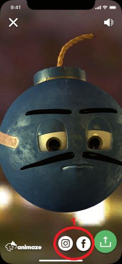

Animaze iPhone: How do I share a screen capture or video on social media?

1. After you take a screen capture or video, shar eon Instagram or Facebook by tapping on the Instagram or Facebook icons.
- After you tap on the icons you will see a pop up allowing you to post on either your feed or your stories.
- To exit without sharing, tap outside of the pop-up feed or story pop-up
2. To save to photos or share via messenger apps or other social media apps, tap on the
icon. Select the platform on which you would like to share. The options in this menu are set within the Settings Menu in your phone’s operating system.
- To exit without sharing, tap outside of the sharing menu.
3. Tap on the button to return to the main screen.
- NOTE: Photos are automatically cropped to a square for Instagram feed posts.